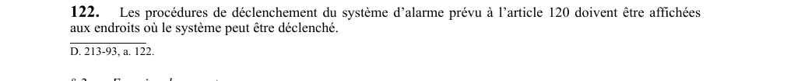

art-122-RSSM : affichage procédures déclenchement alarme
Un article du wiki ⚖️ Recueil législatif
En bref
Les procédures de déclenchement du système d'alarme prévu à l'article 120 doivent être affichées aux endroits où le système peut être déclenché. Cette obligation vise l'employeur.
🌐 LegisQuébec · 📄 PDF officiel
Texte officiel : capture du PDF

Toucher l'image pour l'agrandir🔗 Voir art. 122 RSSM dans le PDF (page 44)
Version : texte officiel du RSSM (RLRQ c. S-2.1, r. 14), à jour au 1er mai 2024 — Éditeur officiel du Québec
Voir aussi
- art. 120 : système d'alarme d'évacuation · obligation : dans une mine souterraine, un système d'alarme doit être installé, protégé contre les intempéries en tout temps, déclenchable en tout temps et capable d'avertir en tout temps tous les travailleurs sous terre de la nécessité d'évacuer la mine.
- art. 121 : interdiction alarme olfactive orifice mine · interdiction : un système d'alarme olfactif ne doit pas être installé dans un bâtiment couvrant un orifice qui sert habituellement d'entrée ou de sortie d'une mine souterraine.
- art. 123 : exercice sauvetage annuel vérification alarme · obligation : un exercice de sauvetage visant à vérifier l'efficacité et le fonctionnement du système d'alarme doit être exécuté au moins une fois par année, en alternance avec toutes les équipes de travail, au cours du quart comptant le plus grand nombre de travailleurs.
- art. 124 : rapport exercice sauvetage minier · obligation : l'exercice de sauvetage prévu à l'article 123 doit faire l'objet d'un rapport comportant 10 informations précises (dates, heures, noms, lieux) à transmettre au comité de santé et sécurité de la mine, à la CNESST et au Service du sauvetage minier.
- ⚖️ Loi habilitante : LSST
- ↑ Index du bloc : Ventilation et qualité de l'air
Pages qui pointent ici (5)
- art-120-RSSM : système d'alarme d'évacuation Recueil législatif
- art-121-RSSM : interdiction alarme olfactive orifice mine Recueil législatif
- art-123-RSSM : exercice sauvetage annuel vérification alarme Recueil législatif
- art-124-RSSM : rapport exercice sauvetage minier Recueil législatif
- RSSM : Ventilation et qualité de l'air (art. 100 à 130) Recueil législatif